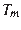
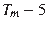
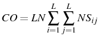
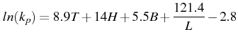
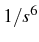
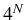
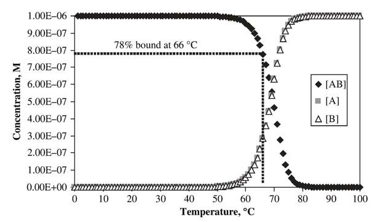
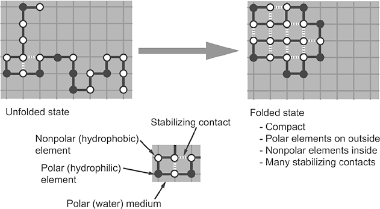

La reacción en cadena de la polimerasa (PCR) es una metodología estándar en cualquier laboratorio de biología molecular y consta fundamentalmente de 3 fases que se repiten un número de ciclos:
Para cada aplicación de la PCR es necesario ajustar las condiciones y el diseño de la reacción, por ejemplo:
En esta sección veremos algunos de los algoritmos habituales para el diseño de cebadores, que deben cumplir al menos tres condiciones:
5'GGGAAA 5' GGGAAAATTCCAGGATCTAT 3'
|||| ) |||| ||||
3' TATCTAGGACCTTA 3' TATCTAGGACCTTAAAAGGG 5'
Hay muchos programas que pueden ayudar en el diseño de primers en la web, como por ejemplo:
o estos otros para diseñar primers degenerados,
Sin embargo, más allá del software elegido, es importante saber cómo se calculan ciertas propiedades moleculares de los primers, para poder analizar con criterio los resultados obtenidos.
Por ejemplo, si retomamos el modelo Nearest Neighbor (NN) de la sección 3.1, podemos calcular la , que es la temperatura a la que la mitad de los primers se han hibridado con el ADN molde, pero también la cantidad de ADN hibridado a cualquier temperatura, por ejemplo a la temperatura de alineamiento, la más crítica, que a menudo se aproxima como .
La siguiente ecuación relaciona exactamente la temperatura con la proporción de ADN hibridado, donde  es la concentración de hebras en exceso (los primers),  el ADN molde que queremos amplificar y  la constante de Boltzmann (R=1.987 cal/mol/k):
|  | (3.4) |
|

|
Esta ecuación es más fina y precisa que la regla de Wallace, que se basa solamente en la secuencia (SantaLucia, 2007):
|  | (3.5) |
El ejercicio de esta sección incluye:
#!/usr/bin/env python
# prog1.2
# adapted from Amplicon (Simon Neil Jarman, http://sourceforge.net/projects/amplicon/)
import math,string,getopt,sys
######################################################################################
#Calculation of Tm with nearest-neighbor bas stacking parameters#
def CalcTm(seq):
cat=0.05
NearPairsPlus = ['AA','AC','AG','AT','CA','CC','CG','CT',
'GA','GC','GG','GT','TA','TC','TG','TT']
DeltaH = [7.9,8.4,7.8,7.2,8.5,8.0,10.6,7.8,
8.2,9.8,8.0,8.4,7.2,8.2,8.5,7.9]
DeltaS = [22.2,22.4,21.0,20.4,22.7,19.9,27.2,21.0,
22.2,24.4,19.9,22.4,21.3,22.2,22.7,22,2]
dH = 0
dS = 0
seq = seq+ ' '
a = 0
while a < len(seq):
b = 0
while b < len(NearPairsPlus):
if seq[a-2:a] == NearPairsPlus[b]:
dH = dH + DeltaH[b]
dS = dS + DeltaS[b]
b = b + 1
a = a + 1
a = a -1
if seq[0]=='A' or seq[0]=='T' or seq[a] == 'A' or seq[a] == 'T':
dH = dH + 2.3
dS = dS + 4.1
if seq[0]=='C'or seq[0]=='G' or seq[a]=='C'or seq[a]=='G':
dH = dH + 0.1
dS = dS - 2.8
Tm = -dH * 1000 /(10.8-dS+(1.987*(math.log(0.00025)))) - 273.15 + (12*math.log(cat))
return Tm
######################################################################################
#A nice function that returns a list of the component sequences from a string for a degenerate sequence#
def regenerate(oligo):
inp = 'ACGTRYSWKMBDVHN'
deg = ['A','C','G','T','AG','CT','CG','AT','GT','AC','CGT','AGT','ACG','ACT','ACGT']
grow = ['']
newgrow = ['']
for a in range(0,len(oligo),1):
for b in range(0,15,1):
if oligo[a] == inp[b]:
if b > 3:
x = 0
newgrow = grow
while x < len(deg[b])-1:
newgrow = newgrow + grow
x = x + 1
grow = newgrow
n = 0
x=0
for c in range(0,len(grow),1):
grow[c] = grow[c]+deg[b][x]
n = n + 1
if n == len(grow)/len(deg[b]):
n = 0
x=x+1
return grow
#######################################################################################
#Assesses primers for hairpin loop formation#
def checkhairpins(primerseqs,minhplen,maxhplen,hpthresh):
num = str(len(primerseqs))
max=len(primerseqs[0])*(int(maxhplen)/100.0)
numhp=0
maxHpotential=0
n=1
for seq in primerseqs:
#print 'oligo number '+str(n)+': '+seq+'\n'
n=n+1
high=perfectmatch(seq)
thresh=(hpthresh/200.0)*high
l=minhplen
topcheck=0
while l<max:
tops,mids,bots,matches=hairpin(seq,l,thresh)
tops=tops[:5]
mids=mids[:5]
bots=bots[:5]
matches=matches[:5]
a=0
while a < len(tops)-1:
print tops[a]
print mids[a]
print bots[a]+'\n'
print str(matches[a])+' / '+str(high/2-l)+ ' Potential H-Bonds\n'
if matches[a]/float(high/2-l) > maxHpotential:
maxHpotential = matches[a]/float(high/2-l)
if tops[a]<>[]:
topcheck=1
a=a+1
l=l+1
return maxHpotential
#####################################################################################
#A function that scores strong and weak Watson-Crick base pairs as 3 and 2 in perfectly-matched d.s. DNA#
def perfectmatch(inseq):
score=0
for a in inseq:
if a == 'A' or a =='T':
score=score+2
if a=='G'or a=='C':
score=score+3
return score
#####################################################################################
def hairpin(inseq,loopl,threshold):
l=len(inseq)
a=0
max=1
tops=[]
bots=[]
mids=[]
matches=[]
b=l
while b >1:
match=0
mid=''
top = "5' "+ inseq[:b-1]
loop=inseq[b-1:b+loopl-1]
bot=inseq[b+loopl-1:l+1]
q=len(top)-len(bot)
if q<0:
q=q*-1
f=' '
for a in range(1,q,1):
f=f+' '
top=top+'-'+loop
revbot=''
for a in range(len(bot)-1,-1,-1):
revbot=revbot+bot[a]
if len(top)-len(loop)-1>len(bot):
bot=f+revbot
if len(top)-len(loop)-1<len(bot):
top=f+top
for a in range(0,loopl,1):
bot=bot+'-'
bot=bot+'+'
a=0
while a <len(bot)-loopl:
inmatch=match
if top[a]=='C' and bot[a]=='G' or top[a]=='G' and bot[a]=='C':
match = match + 3
mid=mid+':'
if top[a]=='A' and bot[a]=='T' or top[a]=='T' and bot[a]=='A':
match = match + 2
mid=mid+'.'
if top[a]=='T' and bot[a]=='G' or top[a]=='G' and bot[a]=='T':
match = match + 2
mid=mid+'~'
if inmatch==match:
mid=mid+' '
a=a+1
for a in range(0,loopl-1,1):
mid=mid+' '
mid=mid+'|'
if match>threshold:
tops=tops+[top]
bots=bots+[bot]
mids=mids+[mid]
matches=matches+[match]
if int(match)>max:
max=int(match)
top=''
bot=''
b=b-1
newtops=[]
newbots=[]
newmids=[]
newmatches=[]
while max>0:
for a in range(0,len(matches)-1,1):
if max==int(matches[a]):
newtops=newtops+[tops[a]]
newbots=newbots+[bots[a]]
newmids=newmids+[mids[a]]
newmatches=newmatches+[matches[a]]
max=max-1
return newtops,newmids,newbots,newmatches
########################################################################
#Assesses primer sequences for self complementarity#
def selfcomp(primerseqs,propcomp,numcomp):
perfect=perfectmatch(primerseqs[0])
threshold=propcomp*perfect*0.01
maxHpotential = 0
n=1
for a in primerseqs:
comps=complementarity(a,'',threshold)
comps=comps[:(numcomp*4)]
#if comps==[]:
# print "\nNo self complementarity above threshold"
n=n+1
b=0
while b<len(comps):
print comps[b]
print comps[b+1]
print comps[b+2]
per = perfectmatch(comps[b])
print '\n ',comps[b+3]+' / '+str(per)+' Potential H-bonds\n'
if float(comps[b+3])/per > maxHpotential:
maxHpotential = float(comps[b+3])/per
b=b+4
if len(primerseqs)>1:
#print "primer multiple sequence complementarities\n"
n=1
dmin=1
for a in primerseqs:
d=dmin
while d < len(primerseqs):
comps=complementarity(a,primerseqs[d],threshold)
comps=comps[:(numcomp*4)]
#print 'oligo combination '+str(n)+': '+a+' + '+primerseqs[d]
#if comps==[]:
# print "\n\nNo self complementarity above current threshold\n"
n=n+1
b=0
while b<len(comps):
print comps[b]
print comps[b+1]
print comps[b+2]
per = perfectmatch(comps[b])
print '\n '+comps[b+3]+' / '+str(per)+' Potential H-bonds\n'
if float(comps[b+3])/per > maxHpotential:
maxHpotential = float(comps[b+3])/per
b=b+4
d=d+1
dmin=dmin+1
return maxHpotential
############################################################################
#A function for identifying complementarity between two sequences and returning lists of complementary pairs above a given threshold#
def complementarity(inseq,inseq2,threshold):
matches = []
max=1
threshold=int(threshold)
oligo="5' "+ inseq+" 3'"
oligorev="3' "+reverse(inseq2)+" 5'"
if inseq2=='':
oligorev = ''
a = len(oligo)-4
while a > 1:
oligorev = oligorev + oligo[a]
a = a - 1
oligorev="3' "+oligorev+" 5'"
if len(oligo)>len(oligorev):
d=len(oligo)-len(oligorev)
while d>0:
oligorev=oligorev+' '
d=d-1
if len(oligo)<len(oligorev):
d=len(oligorev)-len(oligo)
while d>0:
oligo=' '+oligo
d=d-1
Toligo = oligo
mid=u''
for a in range(len(Toligo),0,-1):
match = 0
mid=''
for b in range(0,len(oligorev)-3,1):
inmatch=match
if Toligo[b]=='C' and oligorev[b] =='G' or Toligo[b]=='G' and oligorev[b] =='C':
match = match + 3
mid=mid+':'
if Toligo[b]=='A' and oligorev[b] =='T' or Toligo[b]=='T' and oligorev[b] =='A':
match = match + 2
mid=mid+'.'
if Toligo[b]=='G' and oligorev[b] =='T' or Toligo[b]=='T' and oligorev[b] =='G':
match = match + 2
mid=mid+'~'
if inmatch==match:
mid=mid+' '
if match > threshold:
smatch = str(match)
matches = matches+[Toligo]+[mid]+[oligorev]+[smatch]
if int(match)>max:
max=int(match)
Toligo = ' '+ Toligo
Toligorev = oligorev
for a in range(len(oligo),0,-1):
match = 0
mid=u''
for b in range(0,len(oligorev)-3,1):
inmatch=match
if oligo[b]=='C' and Toligorev[b] =='G' or oligo[b]=='G' and Toligorev[b] =='C':
match = match + 3
mid=mid+':'
if oligo[b]=='A' and Toligorev[b] =='T' or oligo[b]=='T' and Toligorev[b] =='A':
match = match + 2
mid=mid+'.'
if oligo[b]=='G' and Toligorev[b] =='T' or oligo[b]=='T' and Toligorev[b] =='G':
match = match + 2
mid=mid+'~'
if inmatch==match:
mid=mid+' '
if match > threshold:
f=0
for e in matches:
if e == mid:
f=1
if f <>1:
smatch = str(match)
matches = matches+[oligo]+[mid]+[Toligorev]+[smatch]
if int(match) > max:
max=match
Toligorev = ' '+ Toligorev
newmatches=[]
while max>0:
for a in range(3,len(matches)-1,4):
if max==int(matches[a]):
one=matches[a-3]
two=matches[a-2]
thr=matches[a-1]
fou=matches[a]
fou=str(fou)
newmatches=newmatches+[one]+[two]+[thr]+[fou]
max=max-1
return newmatches
################################################################################
#A function that returns the reverse of a given sequence#
def reverse(inseq):
reversed=''
l=len(inseq)-1
for a in range(l,-1,-1):
reversed=reversed+inseq[a]
return reversed
#################################################################################
#Checks forward and reverse primers for complementarity with each other#
def crosscomp(fprimer,rprimer,propcomp,numcomp):
growF=regenerate(fprimer)
growR=regenerate(rprimer)
perfect1=perfectmatch(fprimer)
perfect2=perfectmatch(rprimer)
if perfect2<perfect1:
perfect1=perfect2
threshold=propcomp*perfect1*0.01
crossHpotential = 0
n=1
q=0
while q <len(growR):
for a in growF:
comps=complementarity(a,growR[q],threshold)
comps=comps[:(numcomp*4)]
#print 'oligo '+str(n)+' f: '+a+' r: '+growR[q]
#if comps==[]:
#print "\n\nNo complementarity above current threshold\n"
n=n+1
b=0
while b<len(comps):
print comps[b]
print comps[b+1]
print comps[b+2]
per=perfectmatch(comps[b])
print '\n '+comps[b+3]+' / '+str(per)+' Potential H-bonds'
if float(comps[b+3])/per > crossHpotential:
crossHpotential = float(comps[b+3])/per
b=b+4
q=q+1
return crossHpotential
#################################################################################
#Function that returns degree of degeneracy of a given sequence#
def degeneracy(inseq):
score=1
for a in inseq:
if a=='R' or a=='Y' or a=='S' or a=='W' or a=='M' or a=='K':
score=score*2
if a=='V' or a=='H' or a=='D' or a=='B':
score=score*3
if a=='N':
score=score*4
return score
#################################################################################
def main(argv):
maxdegen = 128
if len(sys.argv) < 3:
print "usage: python check_primers.py 5'forward_primer3' 5'reverse primer3'"
sys.exit(-1)
fprimer = string.upper(sys.argv[1])
rprimer = string.upper(sys.argv[2])
flowtm = rlowtm = 100
fhightm = rhightm = 0
fhpinHpotential = fselfHpotentail = 0
rhpinHpotential = rselfHpotentail = 0
crossHpotential = 0
fdegen = rdegen = 0
## 1) take care of forward primer
print "# forward primer "+fprimer+'\n'
fdegen = degeneracy(fprimer)
print "# fdegen= %g\n" % fdegen
if fdegen <= maxdegen :
fprimerseqs = regenerate(fprimer)
# 1.0) print each regenerated foligo
for s in fprimerseqs:
print "# fundegseq ", s
print "\n"
# 1.1) calculate tms
for s in fprimerseqs:
tm= CalcTm(s)
if tm<flowtm:
flowtm=tm
if tm>fhightm:
fhightm=tm
# 1.2) calculate hairpins
fhpinHpotential = checkhairpins(fprimerseqs,2,40,35)
# 1.3) calculate self-complementarities
fselfHpotentail = selfcomp(fprimerseqs,40,4)
# 1.4) report results
print "# flowTm= %1.1f\n# fhighTm= %1.1f" % (flowtm,fhightm)
print "# fhairpin potential= %1.2f\n# fselfcompl potential= %1.2f\n" % (fhpinHpotential,fselfHpotentail)
else :
print "primer skipped, too degenerated (> ",maxdegen,")\n"
## 2) now do reverse primer
print "# reverse primer "+rprimer+'\n'
rdegen = degeneracy(rprimer)
print "# rdegen= %g\n" % rdegen
if rdegen <= maxdegen :
rprimerseqs = regenerate(rprimer)
# 2.0) print each regenerated roligo
for s in rprimerseqs:
print "# rundegseq ", s
print "\n"
# 2.1) calculate tms
for s in rprimerseqs:
tm= CalcTm(s)
if tm<rlowtm:
rlowtm=tm
if tm>rhightm:
rhightm=tm
# 2.2) calculate hairpins
rhpinHpotential = checkhairpins(rprimerseqs,2,40,35)
# 2.3) calculate self-complementarities
rselfHpotentail = selfcomp(rprimerseqs,40,4)
# 2.4) report results
print "# rlowTm= %1.1f\n# rhighTm= %1.1f" % (rlowtm,rhightm)
print "# rhairpin potential= %1.2f\n# rselfcompl potential= %1.2f\n" % (rhpinHpotential,rselfHpotentail)
else :
print "primer skipped, too degenerated (> ",maxdegen,")\n"
## 3) finally chech cross-complementarities
if fdegen <= maxdegen and rdegen <= maxdegen :
crossHpotential = crosscomp(fprimer,rprimer,40,4)
print "\n# cross-compl potential= %1.1f" % crossHpotential
########################### MAIN ################################################
main(sys.argv)